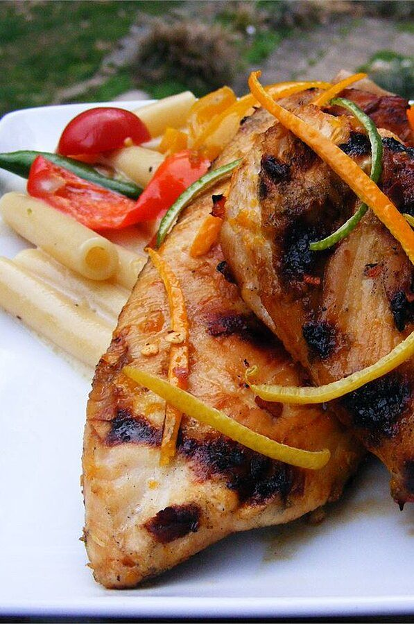

San Diego Grilled Chicken

Description
This is a Southern California version of sweet and sour chicken,
marinated and grilled with a little extra spice. Great for all barbeque lovers.
I usually serve cut into lengths with fresh cilantro, homemade salsa, guacamole,
black beans, and flour tortillas warmed on the grill.
Ingredients
- 2 oranges, zested and juiced
- 2 lemons, zested and juiced
- 2 limes, zested and juiced
- 1 teaspoon ground coriander
- ½ teaspoon dried red pepper flakes
- 2 tablespoons olive oil
- ¼ cup wildflower honey
- 6 skinless, boneless chicken breast halves - pounded to
about 3/4-inch thickness
- salt and pepper to taste
Steps
-
Stir the orange zest, orange juice, lemon zest, lemon juice,
lime zest, lime juice, coriander, red pepper flakes, olive oil,
and honey together in a shallow dish. Remove about 1/4 cup of the mixture
and set aside for later. Add the chicken breasts to the remaining marinade,
turning to coat both sides. Cover with plastic wrap and refrigerate, turning
occasionally, 1 to 4 hours.
-
Preheat an outdoor grill for high heat, and lightly oil the grate. Remove
the chicken breasts from the marinade; discard the marinade.
-
Basting frequently with the reserved sauce, cook the chicken on the
preheated grill until no longer pink in the center and the juices run
clear, about 5 minutes per side. An instant-read thermometer inserted into
the center should read at least 165 degrees F (74 degrees C).
Go back